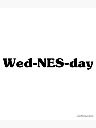

Imagine you’re a teacher trying to teach one of your students how to spell “Wednesday”. Now in your head, there are two ways to spell it: writing it, and sounding it out. Now, writing it out may come naturally to a student or saying it is helpful. But one thing is for sure, spelling words like this can be confusing for some students.
Today I’m going to see what teaching strategies ChatGPT 4.1 (yes it’s new) employs to help a struggling teacher help a 6-year old student learning to spell the days of the week. This sort of application is how I’d love to see AI employed into education, more as an educational aid opposed to replacing teachers, of course.
This will be done in two stages: 1. no training of LLM with minimal information about the student, and 2. uploading information on strats the teacher has “already used” to help students spell words. I’ll record my responses and simulate the first try of each category to help the teacher help the student.
Untrained LLM helping a teacher
USER
You are an LLM aid to me, a teacher, helping a 6 year old student learn how to spell the days of the week, but they are really struggling. What are some ways I can help them learn to spell the days of the week?
ASSISTANT
Absolutely! Here are some fun and effective ways to help a 6-year-old learn to spell the days of the week:
Sing a Song:
Songs for the days of the week make the spelling easier to remember! There are many catchy “Days of the Week” tunes on YouTube (like to the tune of “The Addams Family” or “Twinkle Twinkle”). Singing and clapping out each syllable helps, too.Rainbow Writing:
Have your student write each day of the week in different colored markers or crayons. For example, “Monday” with blue, “Tuesday” with green, and so on. This repetition with color can make it more memorable and fun.Make a Puzzle:
Write the days of the week on cardboard or cardstock and cut each word into letter pieces. Have the student put the letters together to form the words. You can also try mix-and-match style puzzles.Use Mnemonics:
Help them make up silly sentences or word associations. For example,
- Monday: “Monkeys Only Nap During Any Year” (using the first letters M-O-N-D-A-Y)
- Tuesday: “Tigers Usually Eat Snacks During Any Year”
Tracing and Writing Practice:
Give them tracing sheets with the days of the week written in dotted lines. Once they’ve traced, have them try to write each day without looking.Magnetic Letters or Letter Tiles:
Use fridge magnets or letter tiles to spell out each day. Physically arranging the letters can reinforce the correct order and spelling.Visual Chart:
Create or buy a visual chart with each day written clearly, and refer to it daily during your routines. Point to and spell the day every morning together.Day-of-the-Week Story:
Make up a short, simple story that uses the names of the days in order. Reading the story together may help them remember the sequence and spelling.Cheer Each Letter:
Turn each day into a chant:
“Give me an M! Give me an O!… What’s that spell? MONDAY!”Frequent Practice with Games:
Make a matching game or “memory” cards (where they match the spelled-out word to a picture for that day’s activity).
Children this age learn best through multi-sensory, hands-on, and repetitive activities. Make learning fun and keep practice short but frequent—a few minutes each day will really help!
If you’d like sample worksheets, blank tracing sheets, or specific song suggestions, I can provide those too!
It’s nice to see that, in a sense of realism, the LLM understands the environment in which a school teacher is. That is, they realized that teachers have limited resources, so they cannot over-rely on technology and must act creatively through human-to-human interaction. I like how it also recognizes that, even without proper training, they offered a ton of learning strategies for various types of students who benefit from either visual or hearing resources.
Trained LLM helping a teacher
USER
Given this resource on common teaching strategies to help students spell, please devise some new ways to help my student learn to spell the days of the week: https://www.edutopia.org/article/11-ways-to-boost-elementary-students-spelling-skills/
ASSISTANT
Of course! Looking at the Edutopia spelling strategies, here are some creative, research-based ways to help your student spell the days of the week, inspired by ideas in the article:
1. Word Sorts with “Days” Patterns
- How: Provide cards with the days of the week. Let the student group them by similar endings (like “day”) and notice what’s the same and what’s different at the beginning of each word.
- Why: This builds pattern recognition and helps the child see how each word is constructed.
2. “Say, Spell, Say” Routine
- How: For each day, the child says the word (“Monday”), spells it out loud (“M-O-N-D-A-Y”), then says the word again. Do this with claps or while bouncing a ball.
- Why: The repetition and movement help cement spelling in memory.
3. Personal Connection Journal
- How: Each morning, have the child write the phrase, “Today is ______,” filling in the correct day. Add a sentence or drawing about something they do that day.
- Why: Connecting spelling practice to their real life builds meaning, as suggested by the article.
4. “Memory Tricks” or Mnemonics
- How: Make up funny sayings or visuals for tricky days. For example, “Tuesday has TWO vowels at the start!”
- Why: Personal mnemonics help anchor difficult spellings.
5. Word Ladders or Pyramids
- How: Build up to each day’s spelling. For “Monday,” start with M, then MO, then MON, etc., until the whole word is formed.
- Why: It breaks the word into manageable chunks, as advised for breaking words by phoneme.
6. Spelling with Movement
(Adapted from “Spelling out loud and tracing”) - How: Have the child spell each day as they jump, hop, or tap each letter. Or trace the letters in sand, shaving cream, or air. - Why: Multisensory learning solidifies tricky spellings.
7. “Chunk It!” Approach
- How: Focus on the ending “day” and talk about what changes at the start for each day. Practice writing just the first part (Mon, Tues, etc.), then the whole word.
- Why: Recognizing syllables and word parts supports better recall.
8. Digital Practice
- How: Use a simple online tool (like Wordwall or Spelling City) to practice spelling the days, with immediate feedback.
- Why: According to the article, integrating tech can boost engagement and reinforcement.
Bonus:
Let your student be a “teacher for the day” and quiz you or a stuffed animal on how to spell the days. Teaching someone else is a wonderful way to reinforce their own knowledge!
Would you like examples or printables for any of these strategies?
Very interesting, after offering some training information for the LLM to better understand teaching strategies, it seemed to reform the format and structuring of its strats. For example, under every strategy, they now define the “how” and the “why” of each category, opposed to offering somewhat unstructured suggestions. The strategies also seem more practical to real-world understanding of these words. For example, the untrained LLM went to coming up with mnemonics, while the trained model offered a strategy of journaling with the day of the week spelled at the top. People have to put the date at the top of papers all the time, so building up such a repetition helps to fast-track the kids learning of how to spell words of the week. Let’s test whether the LLM GPT 4.01 is aware of the differences betweent their untrained and trained teaching strategies!
Observed Differences between untrained and trained spelling strats
USER
What are the differences between the first set of strategies you offered and the second set of strategies you offered to help a 6 year old kid learn how to spell the days of the week?
ASSISTANT
Great question! Here’s a summary of the two sets of strategies I provided:
Summary of Differences:
| First Set (General/Multi-sensory & Creative) | Second Set (Research-based/Explicit Instruction) |
|---|---|
| Focused on fun, play, and creativity | Focused on building spelling awareness and patterns |
| Activities are broadly engaging, less structured | Activities are structured, strategic, pattern-based |
| Lots of repetition via singing, coloring, games | Emphasizes explicit routines, chunking, personal connection |
| Rooted in early literacy practices & multisensory | Based on “what works” in spelling instruction research |
In short:
- The first set is about playful, multisensory engagement to make learning enjoyable and routine. - The second set is about applying research-backed strategies focused on spelling patterns, explicit routines, and connecting spelling skills to personal meaning and memory.
Both sets complement each other and can be used together for the best results!
Conclusion
Yes, it definitely seems like the GPT 4.1 LLM understands that their trained information seems more practical and structured while the untrained was less structured, but more whimsical in the nature of a 6 year old student. In my opinion, maybe a combination of more fun and engaging strategies of a creative teacher, paired with the structured mindset of a trained teaching aid LLM can do wonders for a struggling student and make the life of a struggling, under-resourced teacher a lot easier!